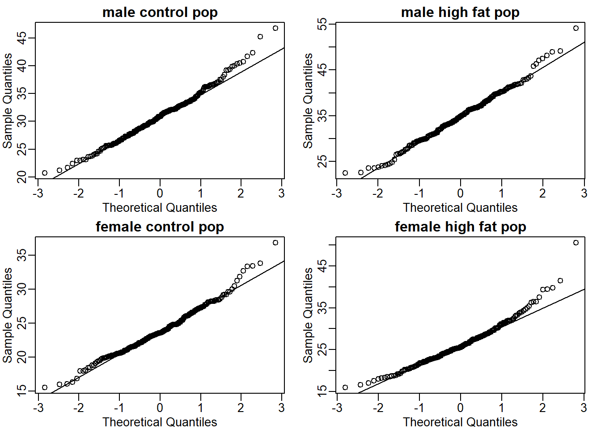
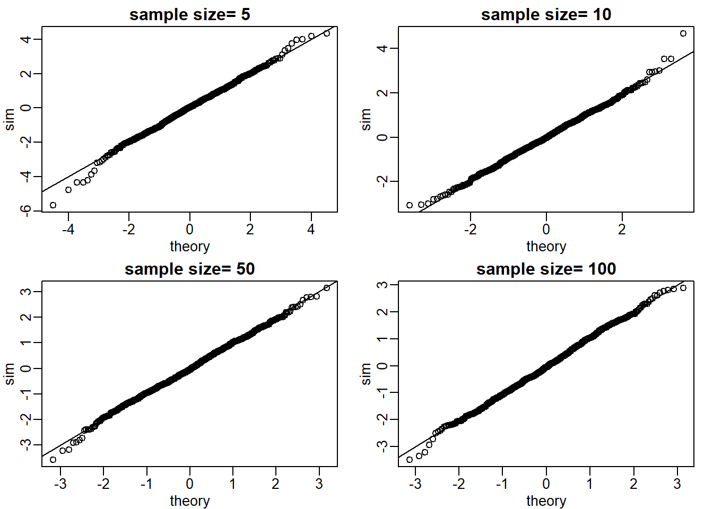
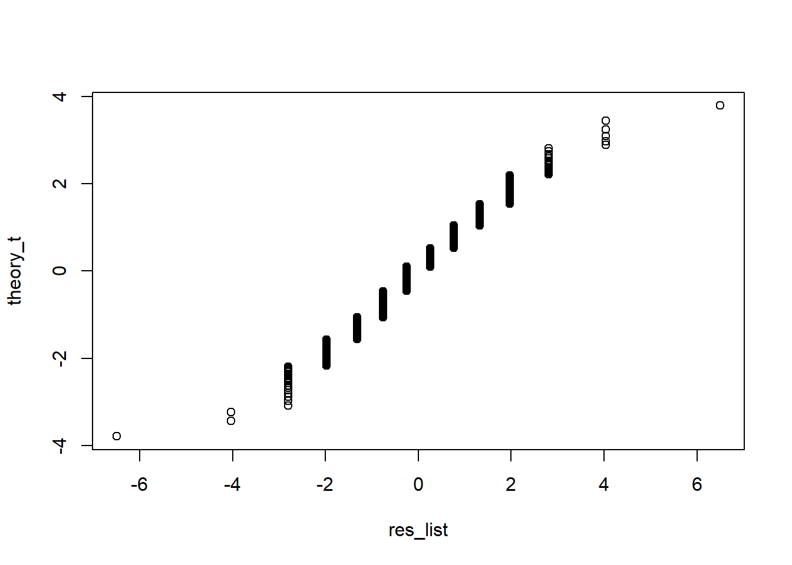

Chapter 2 Inference
Note: I have rephrased some parts of the questions for clarity. These changes are bolded. Due to the random numbers, the exact values of the answers, despite the same seeds, might differ. So please be mindful of that.
First, upload necessary package(s).
library(dplyr) # uplaods the functions filter() and %>%
library(rafalib) # important for plotting with base R2.7 Exercises
If you have not downloaded the data before,
dir <- "https://raw.githubusercontent.com/genomicsclass/dagdata/master/inst/extdata/"
filename <- "femaleControlsPopulation.csv"
url <- paste0(dir, filename)
x <- unlist(read.csv(url))Or if you already have downloaded the data, then just upload it.
dat <- read.csv('femaleControlsPopulation.csv')
bodyweight <- select(dat, Bodyweight)
x <- unlist(bodyweight)
# or use pipe %>%
x <- read.csv('femaleControlsPopulation.csv') %>% select(Bodyweight) %>% unlist()Check out what unlist does by typing ?unlist in the command. The second method is more concise because of the pipe %>%, which allows multiple lines of commands to be in one continuous line.
Question 1
What is the average of these weights?
## [1] 23.89338Question 2
After setting the seed at 1, set.seed(1) take a random sample size 5. What is the absolute value (use abs) of the difference between the average of the sample and the average of all the values?
set.seed(1)
avg_sample <- mean(sample(x,5)) # average of the sample of 5
avg_pop <- mean(x) # average of all values
abs(avg_sample - avg_pop) # absolute difference## [1] 0.2706222Question 3
After setting the seed at 5, set.seed(5) take a random sample size 5. What is the absolute value (use abs) of the difference between the average of the sample and the average of all the values?
set.seed(5)
avg_sample <- mean(sample(x,5)) # average of the sample of 5
avg_pop <- mean(x) # average of all values
abs(avg_sample - avg_pop) # absolute difference## [1] 1.433378Question 4
Why are the answers from 2 and 3 different?
## Bodyweight60 Bodyweight84 Bodyweight128 Bodyweight202
## 21.51 28.14 24.04 23.45
## Bodyweight45
## 23.68## Bodyweight46 Bodyweight154 Bodyweight205 Bodyweight64
## 21.86 20.30 22.95 21.92
## Bodyweight24
## 25.27## [1] FALSENotice that samples a and b differ. Since the seeds were different (1 vs 5), different random numbers were generated. Therefore, the answer is C: Because the average of the samples is a random variable.
Question 5
Set the seed at 1, then using a for-loop take a random sample of 5 mice in 1,000 times. Save these averages. What percent of these 1,000 averages are more than 1 gram away from the average of x?
set.seed(1)
n <- 1000
res <- vector('double',n)
for (i in seq(n)) {
avg_sample <- mean(sample(x,5))
res[[i]] <- avg_sample
}
mean(abs(res-mean(x)) > 1)## [1] 0.498To make a for loop work in R, an empty vector needs to be created first. This can be achieved with the function vector. In this example, the empty vector is res (short for result). In the for loop, each average (avg_sample) from one repetition gets stored in res.
Question 6
We are now going to increase the number of times we redo the sample from 1,000 to 10,000. Set the seed at 1, then using a for-loop take a random sample of 5 mice 10,000 times. Save these averages. What percent of these 10,000 averages are more than 1 gram away from the average of x?
set.seed(1)
n <- 10000
res <- vector('double',n)
for (i in seq(n)) {
avg_sample <- mean(sample(x,5))
res[[i]] <- avg_sample
}
mean(abs(res-mean(x)) > 1)## [1] 0.4976Question 7
Note that the answers to 5 and 6 barely changed. This is expected. The way we think about the random value distributions is as the distribution of the list of values obtained if we repeated the experiment an infinite number of times. On a computer, we can’t perform an infinite number of iterations so instead, for our examples, we consider 1,000 to be large enough, thus 10,000 is as well. Now if instead we change the sample size, then we change the random variable and thus its distribution.
Set the seed at 1, then using a for-loop take a random sample of 50 mice 1,000 times. Save these averages. What percent of these 1,000 averages are more than 1 gram away from the average of x?
set.seed(1)
n <- 1000
res <- vector('double',n)
for (i in seq(n)) {
avg_sample <- mean(sample(x,50))
res[[i]] <- avg_sample
}
mean(abs(res-mean(x)) > 1)## [1] 0.019Question 8
Use a histogram to “look” at the distribution of averages we get with a sample size of 5 and sample size of 50. How would you say they differ?
# sample size = 5
set.seed(1)
n <- 1000
res5 <- vector('double',n)
for (i in seq(n)) {
avg_sample <- mean(sample(x,5))
res5[[i]] <- avg_sample
}
sd(res5) # standard deviation = spread of the histogram## [1] 1.52445# sample size = 50
set.seed(1)
n <- 1000
res50 <- vector('double',n)
for (i in seq(n)) {
avg_sample <- mean(sample(x,50))
res50[[i]] <- avg_sample
}
sd(res50) # standard deviation = spread of the histogram## [1] 0.4260116The standard deviation of res50 is smaller than that of res5 because of the difference in the sample sizes. A higher standard deviation leads to a wider histogram. See two figures below.
mypar is a function from the package rafalib. It helps to align multiple plots in a single plot. mypar(1,1) contains one panel only, mypar(2,1) contains 2 rows of panels and 1 column, mypar(1,2) contains 1 row of panels and 2 columns, etc. Type ?mypar for more information. You will be using this function to plot a graph throughout the entire book. hist plots a histogram.
The answer is B: They both look normal, but with a sample size of 50 the spread is smaller.
Question 9
For the last set of averages, the ones obtained from a sample size of 50, what percent are between 23 and 25?
## [1] 0.976Question 10
Now ask the same question of a normal distribution with average 23.9 and standard deviation 0.43.
## [1] 0.9765648The answers to 9 and 10 were very similar. This is because we can approximate the distribution of the sample average with a normal distribution. We will learn more about the reason for this next.
2.9 Exercises
If you have not downloaded the data before:
dir <- "https://raw.githubusercontent.com/genomicsclass/dagdata/master/inst/extdata/"
filename <- "mice_pheno.csv"
url <- paste0(dir, filename)
dat <- read.csv(url)
dat <- na.omit(dat)If you have the data already in your directory:
Question 1
Use dplyr to create a vector x with the body weight of all males on the control (chow) diet. What is this population’s average?
## [1] 30.96381Throughout the book, I will be using %>% for brevity. If you don’t understand it, please check out Chapter 18 of *R for Data Science.
Question 2
Now use the rafalib package and use the popsd function to compute the population standard deviation.
## [1] 4.420501popsd and sd are slightly different. sd calculates the standard deviation of the sample size, so the denominator that it uses to compute SD is n-1. Function var also uses denominator n-1 to calculate variance. However, popsd (which is from rafalib package) uses denominator n.
Question 3
Set the seed at 1. Take a random sample X of size 25 from x. What is the sample average?
## [1] 32.0956Question 4
Use dplyr to create a vector y with the body weight of all males on the high fat (hf) diet. What is this population’s average?
## [1] 34.84793Question 5
Now use the rafalib package and use the popsd function to compute the population standard deviation.
## [1] 5.574609Question 6
Set the seed at 1. Take a random sample Y of size 25 from y. What is the sample average?
## [1] 34.768Question 7
What is the difference in absolute value between \(\bar{y}-\bar{x}\) and \(\bar{Y}-\bar{X}\)?
pop_diff <- mean(y) - mean(x)
sample_diff <- mean(samp_y) - mean(samp_x)
abs(sample_diff - pop_diff)## [1] 1.211716Question 8
Repeat the above for females. Make sure to set the seed to 1 before each sample call. What is the difference in absolute value between \(\bar{y}-\bar{x}\) and \(\bar{Y}-\bar{X}\)?
chow_f_pop <- dat %>% filter(Sex == 'F' & Diet == 'chow') %>%
select(Bodyweight) %>% unlist() # x
hf_f_pop <- dat %>% filter(Sex == 'F' & Diet == 'hf') %>%
select(Bodyweight) %>% unlist() # y
set.seed(1)
sample_chow_f_pop <- sample(chow_f_pop, 25) # X
set.seed(1)
sample_hf_f_pop <- sample(hf_f_pop,25) # Y
pop_diff <- mean(hf_f_pop) - mean(chow_f_pop) # y - x
sample_diff <- mean(sample_hf_f_pop) - mean(sample_chow_f_pop) # Y - X
abs(sample_diff - pop_diff)## [1] 0.7364828Question 9
For the females, our sample estimates were closer to the population difference than with males. What is a possible explanation for this?
ans <- c(popsd(hf_f_pop), popsd(chow_f_pop), popsd(y), popsd(x))
names(ans) <- c('hf female', 'chow female', 'hf male', 'chow male')
ans## hf female chow female hf male chow male
## 5.069870 3.416438 5.574609 4.420501The answer is A: The population variance of the females is smaller than that of the males; thus, the sample variable has less variability.
2.11 Exercises
If you have not downloaded the data before:
dir <- "https://raw.githubusercontent.com/genomicsclass/dagdata/master/inst/extdata/"
filename <- "mice_pheno.csv"
url <- paste0(dir, filename)
dat <- read.csv(url)
dat <- na.omit(dat)If you have the data already in your directory:
Question 1
If a list of numbers has a distribution that is well approximated by the normal distribution, what proportion of these numbers are within one standard deviation away from the list’s average?
## [1] 0.6826895Question 2
What proportion of these numbers are within two standard deviations away from the list’s average?
## [1] 0.9544997Question 3
What proportion of these numbers are within three standard deviations away from the list’s average?
## [1] 0.9973002Question 4
Define y to be the weights of males on the control diet. What proportion of the mice are within one standard deviation away from the average weight (remember to use popsd for the population sd)?
y <- dat %>% filter(Sex == 'M' & Diet == 'chow') %>%
select(Bodyweight) %>% unlist()
z_score <- (y - mean(y))/popsd(y) # get t-statistic (i.e., z score)
mean(abs(z_score) <= 1)## [1] 0.6950673## [1] 0.6950673It doesn’t matter which solution you use as long as you have the same answer.
Question 5
What proportion of these numbers are within two standard deviations away from the list’s average?
## [1] 0.9461883## [1] 0.9461883It doesn’t matter which solution you use as long as you have the same answer.
Question 6
What proportion of these numbers are within three standard deviations away from the list’s average?
## [1] 0.9910314## [1] 0.9910314It doesn’t matter which solution you use as long as you have the same answer.
Question 7
Note that the numbers for the normal distribution and our weights are relatively close. Also, notice that we are indirectly comparing quantiles of the normal distribution to quantiles of the mouse weight distribution. We can actually compare all quantiles using a qq-plot. Which of the following best describes the qq-plot comparing mouse weights to the normal distribution?

The answer is C: The mouse weights are well approximated by the normal distribution, although the larger values (right tail) are larger than predicted by the normal.This is consistent with the differences seen between question 3 and 6.
Question 8
Create the above qq-plot for the four populations: male/females on each of the two diets. What is the most likely explanation for the mouse weights being well approximated? What is the best explanation for all these being well approximated by the normal distribution?
mc <- dat %>% filter(Sex == 'M' & Diet == 'chow') %>%
select(Bodyweight) %>% unlist()
mhf <- dat %>% filter(Sex == 'M' & Diet == 'hf') %>%
select(Bodyweight) %>% unlist()
fc <- y <- dat %>% filter(Sex == 'F' & Diet == 'chow') %>%
select(Bodyweight) %>% unlist()
fhf <- y <- dat %>% filter(Sex == 'F' & Diet == 'hf') %>%
select(Bodyweight) %>% unlist()
mypar(2,2)
qqnorm(mc, main = 'male control pop')
qqline(mc)
qqnorm(mhf, main = 'male high fat pop')
qqline(mhf)
qqnorm(fc, main = 'female control pop')
qqline(fc)
qqnorm(fhf, main = 'female high fat pop')
qqline(fhf)
The answer is B: This just happens to be how nature behaves. Perhaps the result of many biological factors averaging out.
Question 9
Here we are going to use the function replicate to learn about the distribution of random variables. All the above exercises relate to the normal distribution as an approximation of the distribution of a fixed list of numbers or a population. We have not yet discussed probability in these exercises. If the distribution of a list of numbers is approximately normal, then if we pick a number at random from
this distribution, it will follow a normal distribution. However, it is important to remember that stating that some quantity has a distribution does not necessarily imply this quantity is random. Also, keep in mind that this is not related to the central limit theorem. The central limit applies to averages of random variables. Let’s explore this concept.
We will now take a sample of size 25 from the population of males on the chow diet. The average of this sample is our random variable. We will use the replicate to observe 10,000 realizations of this random variable. Set the seed at 1, generate these 10,000 averages. Make a histogram and qq-plot of these 10,000 numbers against the normal distribution.
We can see that, as predicted by the CLT, the distribution of the random variable is very well approximated by the normal distribution.
y <- filter(dat, Sex=="M" & Diet=="chow") %>% select(Bodyweight) %>% unlist
avgs <- replicate(10000, mean( sample(y, 25)))
mypar(1,2)
hist(avgs)
qqnorm(avgs)
qqline(avgs)What is the average of the distribution of the sample average?
m <- 10000
n <- 25
y <- filter(dat, Sex=="M" & Diet=="chow") %>%
select(Bodyweight) %>% unlist
set.seed(1)
avg_list <- replicate(m, {
mean(sample(y,25))
})
mypar(1,2)
hist(avg_list) # distribution
qqnorm(avg_list) # qq-plot
qqline(avg_list)## [1] 30.95581Question 10
What is the standard deviation of the distribution of sample averages?
## [1] 0.8368192Question 11
According to the CLT, the answer to exercise 9 should be the same as mean(y). You should be able to confirm that these two numbers are very close. Which of the following does the CLT tell us should be close to your answer to exercise 10?
## [1] 0.8841001Question 12
In practice we do not know \(\sigma\) (popsd(y)) which is why we can’t use the CLT directly. This is because we see a sample and not the entire distribution. We also
can’t use popsd(avgs) because to construct averages, we have to take 10,000 samples and this is never practical. We usually just get one sample. Instead we have to estimate popsd(y). As described, what we use is the sample standard
deviation. Set the seed at 1, using the replicate function, create 10,000 samples of 25 and now, instead of the sample average, keep the standard deviation. Look at the distribution of the sample standard deviations. It is a random variable. The real population SD is about 4.5. What proportion of the sample SDs are below 3.5?

## [1] 0.0964Question 13
What the answer to question 12 reveals is that the denominator of the t-test is a random variable. By decreasing the sample size, you can see how this variability can increase. It therefore adds variability. The smaller the sample size, the more variability is added. The normal distribution stops providing a useful approximation. When the distribution of the population values is approximately normal, as it is for the weights, the t-distribution provides a better approximation. We will see this later on. Here we will look at the difference between the t-distribution and normal. Use the function qt and qnorm to get the quantiles of x=seq(0.0001,0.9999,len=300). Do this for degrees of freedom 3, 10, 30, and 100. Which of the following is true?
x = seq(0.0001, 0.9999, len = 300)
df_list <- c(3,10,30,100)
mypar(2,2)
for (i in seq_along(df_list)) {
qqnorm(qt(x,df_list[i]), main = df_list[i])
}The answer is C: The t-distribution has larger tails up until 30 degrees of freedom, at which point it is practically the same as the normal distribution.
2.13 Exercises
dir <- "https://raw.githubusercontent.com/genomicsclass/dagdata/master/inst/extdata/"
filename <- "femaleMiceWeights.csv"
url <- paste0(dir, filename)
dat <- read.csv(url)Question 1
The CLT is a result from probability theory. Much of probability theory was originally inspired by gambling. This theory is still used in practice by casinos. For example, they can estimate how many people need to play slots for there to be a 99.9999% probability of earning enough money to cover expenses. Let’s try a simple example related to gambling.
Suppose we are interested in the proportion of times we see a 6 when rolling n=100 die. This is a random variable which we can simulate with x=sample(1:6, n, replace=TRUE) and the proportion we are interested in can be expressed as an average: mean(x==6). Because the die rolls are independent, the CLT applies.
We want to roll n dice 10,000 times and keep these proportions. This random variable (proportion of 6s) has mean p=1/6 and variance p*(1-p)/n. So according to CLT
z = (mean(x==6) - p) / sqrt(p*(1-p)/n) should be normal with mean 0 and SD 1. Set the seed to 1, then use replicate to perform the simulation, and report what proportion of
times z was larger than 2 in absolute value (CLT says it should be about 0.05).
n <- 100
B <- 10000
p <- 1/6
set.seed(1)
res_list <- replicate(B, {
x = sample(1:6,n, replace = T)
z <- (mean(x==6)-p) / sqrt(p*(1-p)/n)
return(z)
})
mean(abs(res_list) > 2)## [1] 0.0424Question 2
For the last simulation you can make a qqplot to confirm the normal approximation. Now, the CLT is an asymptotic result, meaning it is closer and closer to being a perfect approximation as the sample size increases. In practice, however, we need to decide if it is appropriate for actual sample sizes. Is 10 enough? 15? 30?
In the example used in exercise 1, the original data is binary (either 6 or not). In this case, the success probability also affects the appropriateness of the CLT. With very low probabilities, we need larger sample sizes for the CLT to “kick in”.
Run the simulation from exercise 1, but for different values of p and n. For which of the following is the normal approximation best?
Ps <- c(0.01,0.5)
Ns <- c(5,30,100)
set.seed(1)
question2 <- function(n,p, B = 10000) {
res_list <- replicate(B, {
sides <- 1/p
x = sample(1:sides, n, replace = T)
z <- (mean(x==1)-p) / sqrt(p*(1-p)/n)
return(z)
})
}
mypar(2,2)
qqnorm(question2(5,0.5), main = 'n=5, p=0.5')
qqnorm(question2(30,0.5), main = 'n=30, p=0.5') # the answer is B
qqnorm(question2(30,0.01), main = 'n=30, p=0.01')
qqnorm(question2(100,0.01), main = 'n=100, p=0.01')mypar(1,2)
hist(question2(30,0.5), main = 'n=30, p=0.5')
hist(question2(100,0.01), main = 'n=100, p=0.01')The answer is B, n = 30, p = 0.5. I created a custom function for this question. However, another approach (and maybe more concise) is to use a for loop.
This is tricky question, primarily because not all dice has number 6 (as is the case in Question 1, mean(x==6)). So you had to calculate the probability where the dice ends up in another side by modifying the code; since all dice has sdie 1, mean(x==1) seems like a safe choice. Also, the number of the sides for each die changes since it is defined by the p value. For instance, if p equals 0.01 for side 1, then there are 100 sides total (1/0.01 = 100).
Question 3
As we have already seen, the CLT also applies to averages of quantitative data. A major difference with binary data, for which we know the variance is p(1-p), is that with quantitative data we need to estimate the population standard deviation.
In several previous exercises we have illustrated statistical concepts with the unrealistic situation of having access to the entire population. In practice, we do not have access to entire populations. Instead, we obtain one random sample and need to reach conclusions analyzing that data. dat is an example of a typical simple dataset representing just one sample. We have 12 measurements for each of two populations:
X <- filter(dat, Diet=="chow") %>% select(Bodyweight) %>% unlist
Y <- filter(dat, Diet=="hf") %>% select(Bodyweight) %>% unlistWe think of X as a random sample from the population of all mice in the control diet and Y as a random sample from the population of all mice in the high fat diet. Define the parameter \(\mu_x\) as the average of the control population. We estimate this parameter with the sample average \(\bar{X}\). What is the sample average?
## [1] 23.81333Question 4
We don’t know \(\mu_x\), but want to use \(\bar{X}\) to understand \(\mu_x\). Which of the following uses CLT to understand how well \(\bar{X}\) approximates \(\mu_x\)?
The answer is D: \(\bar{X}\) follows a normal distribution with mean \(\mu_x\) and standard deviation of \(\frac{\sigma_x}{\sqrt{12}}\) where \(\sigma_x\) is the population of standard deviation.
It is important to be aware of the fact that \(\bar{X}\) is based on raw data. So the mean of the distribution can be approximated by the population mean \(\mu_x\). However, if the question asked about z-score, then it would be at 0, because z-score (i.e., t-statistic) is standardized.
Question 5
The result above tells us the distribution of the following random variable \(Z = \sqrt{12}\frac{\bar{X}-\mu_x}{\sigma_x}\). What does the CLT tell us is the mean of \(Z\) (you don’t need code)?
The answer is 0. Z refers to t-statistic (something that the book does not explicitly highlight), which is not raw data. Instead, we use raw data and then compute t-statistic. This is the value that is used to compute p-value based on the normal distribution. In the case of z-score or t-statistic, it is 0 at the mean of the sample due to its mathematical definition.
Question 6
The result of 4 and 5 tell us that we know the distribution of the difference between our estimate and what we want to estimate, but don’t know. However, the equation involves the population standard deviation \(\sigma_X\), which we don’t know. Given what we discussed, what is your estimate of \(\sigma_x\)?
## [1] 3.022541Question 7
Use the CLT to approximate the probability that our estimate \(\bar{X}\) is off by more than 2 grams from \(\mu_x\).
## [1] 0.02189533Question 8
Now we introduce the concept of a null hypothesis. We don’t know \(\mu_x\) nor \(mu_y\). We want to quantify what the data say about the possibility that the diet has no effect: \(\mu_x = \mu_y\). If we use CLT, then we approximate the distribution of \(\bar{X}\) as normal with mean \(mu_X\) and standard deviation of \(\frac{\sigma_X}{\sqrt{M}}\) and the distribution of \(\bar{Y}\) and standard deviation of \(\frac{\sigma_y}{\sqrt{N}}\), with \(M\) and \(N\) as the sample sizes for \(X\) and \(Y\) respectively, in this case 12. This implies that the difference \(\bar{Y} - \bar{X}\) has mean \(0\). We described that the standard deviation of this statistic (the standard error) is \(SE(\bar{Y} - \bar{X}) = \sqrt{\sigma_y^2/12 + \sigma_x^2/12}\) and that we estimate the population standard deviations \(\sigma_x\) and \(\sigma_y\) with the sample estimates. What is the estimate of \(SE(\bar{Y} - \bar{X}) = \sqrt{\sigma_y^2/12 + \sigma_x^2/12}\)?
## [1] 1.469867Question 9
So now we can compute \(\bar{Y}-\bar{X}\) as well as an estimate of this standard error and construct a t-statistic. What is this t-statistic?
## [1] 2.055174This is a good formula to memorize because it will return in later chapters. Knowing this formula can enable us to compute p-values from scratch.
Question 10
If we apply the CLT, what is the distribution of this t-statistic?
The answer is A: Normal with mean 0 and standard deviation 1.
T-statistic is z-score, so the values are standardized to the sample mean. Therefore, the mean is 0.
Question 11
Now we are ready to compute a p-value using the CLT. What is the probability of observing a quantity as large as what we computed for t-statistic in Question 9, when the null distribution is true?
## [1] 0.0398622Question 12
CLT provides an approximation for cases in which the sample size is large. In practice, we can’t check the assumption because we only get to see 1 outcome (which you computed above). As a result, if this approximation is off, so is our p-value. As described earlier, there is another approach that does not require a large sample size, but rather that the distribution of the population is approximately normal. We don’t get to see this distribution so it is again an assumption, although we can look at the distribution of the sample with qqnorm(X) and qqnorm(Y). If we are willing to assume this, then it follows that the t-statistic follows t-
distribution. What is the p-value under the t-distribution approximation? Hint: use the t.test function.
mypar(1,2)
qqnorm(X, main = 'Theoretical normal quantiles vs X')
qqline(X)
qqnorm(Y, main = 'Theoretical normal quantiles vs Y')
qqline(Y)## [1] 0.05299888Question 13
With the CLT distribution, we obtained a p-value smaller than 0.05 and with the t-distribution, one that is larger. They can’t both be right. What best describes the difference?
The answer is B: These are two different assumptions. The t-distribution accounts for the variability introduced by the estimation of the standard error and thus, under the null, large values are more probable under the null distribution.
2.18 Exercises
For these exercises we will load the babies dataset from babies.txt. We will use this data to review the concepts behind the p-values and then test confidence interval concepts.
This is a large dataset (1,236 cases), and we will pretend that it contains the entire population in which we are interested. We will study the differences in birth weight between babies born to smoking and non-smoking mothers. First, let’s split this into two birth weight datasets: one of birth weights to non-smoking mothers and the other of birth weights to smoking mothers.
bwt.nonsmoke <- filter(babies, smoke==0) %>% select(bwt) %>% unlist
bwt.smoke <- filter(babies, smoke==1) %>% select(bwt) %>% unlistNow, we can look for the true population difference in means between smoking and non-smoking birth weights.
## [1] 8.937666## [1] 17.38696## [1] 18.08024The population difference of mean birth weights is about 8.9 ounces. The standard deviations of the nonsmoking and smoking groups are about 17.4 and 18.1 ounces, respectively.
As we did with the mouse weight data, this assessment interactively reviews inference concepts using simulations in R. We will treat the babies dataset as the full population and draw samples from it to simulate individual experiments. We will then ask whether somebody who only received the random samples would be able to draw correct conclusions about the population.
We are interested in testing whether the birth weights of babies born to non-smoking mothers are significantly different from the birth weights of babies born to smoking mothers.
Question 1
Set the seed at 1 and obtain two samples, each of size N = 25, from non-smoking mothers (dat.ns) and smoking mothers (dat.s). Compute the t-statistic (call it tval).
N <- 25
set.seed(1)
dat.ns <- sample(bwt.nonsmoke,N)
dat.s <- sample(bwt.smoke,N)
tval <- (mean(dat.s) - mean(dat.ns)) / sqrt(var(dat.s)/N + var(dat.ns)/N)
t.test(dat.s,dat.ns)$statistic[[1]]## [1] -2.120904## [1] 0.03912225Question 2
Recall that we summarize our data using a t-statistics because we know that in situations where the null hypothesis is true (what we mean when we say “under the null”) and the sample size is relatively large, this t-value will have an approximate standard normal distribution. Because we know the distribution of the t-value under the null, we can quantitatively determine how unusual the observed t-value would be if the null hypothesis were true.
The standard procedure is to examine the probability a t-statistic that actually does follow the null hypothesis would have larger absolute value than the absolute value of the t-value we just observed- this is called a two-sided test.
We have computed these by taking one minus the area under the standard normal curve between -abs(tval) and abs(tval). In R, we can do this by using the pnorm function, which computes the area under a normal curve from negative infinity up to the value given as its first argument. What is the estimated p-value?
## [1] 0.03392985Question 3
Because of the symmetry of the standard normal distribution, there is a simpler way to calculate the probability that a t-value under the null could have a larger absolute value than tval. Choose a simplified calculation from the four choices.
## [1] 0.03392985Question 4
By reporting only p-values, many scientific publications provide an incomplete story of their findings. As we have mentioned, with very large sample sizes, scientifically insignificant differences between two groups can lead to small p-values. Confidence intervals are more informative as they include the estimate itself. Our estimate of the difference between babies of smokers and non-smokers: mean(dat.s) - mean( dat.ns). If we use the CLT, what quantity would we add and subtract to this estimate to obtain a 99% confidence interval?
## [1] -9.92Q <- qnorm(0.5 + 0.99/2)
se <- sqrt(var(dat.ns)/N + var(dat.s)/N)
c(-Q*se + mean(dat.s) - mean(dat.ns), mean(dat.s) - mean(dat.ns) + Q*se)## [1] -21.967797 2.127797## [1] 12.0478Question 5
If instead of CLT, we use the t-distribution approximation, what do we add and subtract (use 2*N-2 degrees of freedom)?
Qt <- qt(0.5 + 0.99/2, df = N*2-2)
se <- sqrt(var(dat.ns)/N + var(dat.s)/N)
c(-Qt*se + mean(dat.s) - mean(dat.ns), mean(dat.s) - mean(dat.ns) + Qt*se)## [1] -22.465339 2.625339##
## Welch Two Sample t-test
##
## data: dat.s and dat.ns
## t = -2.1209, df = 47.693, p-value = 0.03916
## alternative hypothesis: true difference in means is not equal to 0
## 95 percent confidence interval:
## -19.3258047 -0.5141953
## sample estimates:
## mean of x mean of y
## 114.76 124.68## [1] 12.54534Question 6
Why are the values from 4 and 5 so similar?
The answer is C: N and thus the degrees of freedom is large enough to make the normal and t-distributions very similar.
Question 7
Which of the following sentences about a Type I error is false?
Question 8
Set the seed at 1 and take a random sample of \(N = 5\) measurements from each of the smoking and nonsmoking datasets. What is the p-value (use the t-test function)?
N <- 5
set.seed(1)
ns_sample <- sample(bwt.nonsmoke, N)
s_sample <- sample(bwt.smoke, N)
t.test(ns_sample, s_sample)$p.value## [1] 0.1366428Question 9
The p-value is larger than 0.05 so using the typical cut-off, we would not reject. This is a type II error (false negative). Which of the following is not a way to decrease this type of error?
The answer is C: Find a population for which the null is not true.
Question 10
Set the seed at 1, then use the replicate function to repeat the code in Exercise 9 10,000 times. What proportion of the time do we reject at the 0.05 level?
B <- 10000
alpha <- 0.05
set.seed(1)
N <- 5
res_list<- replicate(B, {
ns_sample <- sample(bwt.nonsmoke, N)
s_sample <- sample(bwt.smoke, N)
pval <- t.test(ns_sample, s_sample)$p.value
return(alpha > pval) # this returns logical (i.e., TRUE if pval is smaller than 0.05 = alpha), and stores in the vector res_list.
})
mean(res_list) ## [1] 0.0984Question 11
Note that, not surprisingly, the power is lower than 10%. Repeat the exercise above for sample sizes of 30, 60, 90 and 120. Which of these four gives you power of about 80%?
pval_calc <- function(N) {
ns_sample <- sample(bwt.nonsmoke, N)
s_sample <- sample(bwt.smoke, N)
pval <- t.test(ns_sample, s_sample)$p.value
return(pval)
}
Ns <- c(30,60,90,120)
B <- 10000
alpha <- 0.05
res_list <- vector('double',length(Ns))
for (i in seq_along(Ns)) {
res_list[[i]] <- mean(replicate(B, pval_calc(Ns[[i]])) < alpha)
}
names(res_list) <- Ns
print(res_list) # sample size of 60 gives power of 80%## 30 60 90 120
## 0.4933 0.7868 0.9344 0.9835Sample size of 60 gives power of 80%.
Question 12
Repeat Question 11, but now require an \(\alpha\) level of 0.01. Which of these four gives you power of 80%?
pval_calc <- function(N) {
ns_sample <- sample(bwt.nonsmoke, N)
s_sample <- sample(bwt.smoke, N)
pval <- t.test(ns_sample, s_sample)$p.value
return(pval)
}
Ns <- c(30,60,90,120)
B <- 10000
alpha <- 0.01
res_list <- vector('double',length(Ns))
for (i in seq_along(Ns)) {
res_list[[i]] <- mean(replicate(B, pval_calc(Ns[[i]])) < alpha)
}
names(res_list) <- Ns
print(res_list) # sample size of 90 gives power of 80%## 30 60 90 120
## 0.2461 0.5607 0.7932 0.9241Sample size of 90 gives power of 80%.
2.21 Exercises
We have used Monte Carlo simulation throughout this chapter to demonstrate statistical concepts; namely, sampling from the population. We mostly applied this to demonstrate the statistical properties related to inference on differences in averages. Here, we will consider examples of how Monte Carlo simulations are used in practice.
Question 1
Imagine you are William Sealy Gosset and have just mathematically derived the distribution of the t-statistic when the sample comes from a normal distribution. Unlike Gosset you have access to computers and can use them to check the results.
Let’s start by creating an outcome. Set the seed at 1, use rnorm to generate a random sample of size 5, \(X_1,...,.X_5\) from a standard normal distribution, then compute the t-statistic \(t = \sqrt{5}\bar{X}/s\) with \(s\) the sample standard deviation. What value do you observe?
## [1] 0.3007746Question 2
You have just performed a Monte Carlo simulation using rnorm, a random number generator for normally distributed data. Gosset’s mathematical calculation tells us that the t-statistic defined in the previous exercise, a random variable, follows a t-distribution with \(N-1\) degrees of freedom. Monte Carlo simulations can be used to check the theory: we generate many outcomes and compare them to the theoretical result. Set the seed to 1, generate B = 1000 t-statistics as done in Question 1. What proportion is larger than 2?
set.seed(1)
samp <- rnorm(5)
tstat <- sqrt(5)*samp/sd(samp)
get_t <- function(n) {
samp <- rnorm(n)
tstat <- sqrt(n)*mean(samp)/sd(samp)
return(tstat)
}
set.seed(1)
res_list <- replicate(1000, get_t(5))
mean(res_list > 2)## [1] 0.068Question 3
The answer to Question 2 is very similar to the theoretical prediction: 1-pt(2,df=4). We can check several such quantiles using qqplot function.
To obtain quantiles for the t-distribution we can generate percentiles from just above 0 to just below 1: B=100; ps = seq(1/(B+1), 1-1/(B+1), len = B) and compute the quantiles with qt(ps, df=4). Now we can use qqplot to compare these theoretical quantiles to those obtained in Monte Carlo simulation. Use Monte Carlo simulation developed for Question 2 to corroborate that the t-statistic \(t = \sqrt{N}\bar{X}/s\) follows a t-distribution for several values of N.
For which sample sizes does the approximation best work?
B <- 1000
ps = seq(1/(B+1), 1-1/(B+1),len=B)
get_t <- function(n) {
samp <- rnorm(n)
tstat <- sqrt(n)*mean(samp)/sd(samp)
return(tstat)
}
Ns <- c(5,10,50,100)
mypar(2,2)
set.seed(1)
for (i in seq_along(Ns)) {
res_list <- replicate(1000, get_t(Ns[i]))
theory_t <- qt(ps,df=Ns[i]-1)
qqplot(theory_t, res_list, main = paste0('sample size= ',Ns[i]),
xlab = 'theory', ylab = 'sim')
abline(0,1)
}
The approximations are spot on for all sample sizes (answer choice C).
Question 4
Use Monte Carlo simulation to corroborate that the t-statistic comparing two means and obtained with normally distributed (mean 0 and sd) data follows a t-distribution. In this case we will use the t.test function with var.equal=TRUE. With this argument the degrees of freedom will be df=2*N-2 with N the sample size. For which sample sizes does the approximation best work?
ttestgenerator <- function(n) {
cases <- rnorm(n)
controls <- rnorm(n)
tstat <- t.test(cases,controls)$statistic[[1]]
return(tstat)
}
Ns <- c(5,10,50,100)
mypar(2,2)
set.seed(1)
for (i in seq_along(Ns)) {
res_list <- replicate(1000, ttestgenerator(Ns[i]))
theory_t <- qt(ps,df=2*Ns[i]-2)
qqplot(theory_t, res_list, main = paste0('sample size= ',Ns[i]),
xlab = 'theory', ylab = 'sim')
abline(0,1)
}
The approximations are spot on for all sample sizes (answer choice C).
Question 5
Is the following statement true or false? If instead of generating the sample with X = rnorm(15), we generate it with binary data (either positive or negative 1 with probability 0.5) X = sample(c(-1,1),15,replace = TRUE) then the t-statistic
tstat <- sqrt(15) * mean(X) / sd(X)
is approximated by a t-distribution with 14 degrees of freedom.
set.seed(1)
res_list <- replicate(1000, {
X <- sample(c(-1,1),15,replace = T)
tstat <- sqrt(15) * mean(X)/sd(X)
return(tstat)
})
ps <- seq(1/(B+1), 1-1/(B+1),len=B)
theory_t <- qt(ps,df=14)
qqplot(res_list, theory_t)
False. Instead, it is approximated by binomial distribution because the data are binary (only two values).
Question 6
Is the following statement true or false? If instead of generating the sample with X = rnorm(N) with N = 1000, we generate it with binary data X = sample(c(-1,1),15,replace = TRUE) then the t-statistic
tstat <- sqrt(15) * mean(X) / sd(X)
is approximated by a t-distribution with 999 degrees of freedom.
set.seed(1)
res_list <- replicate(1000, {
X <- sample(c(-1,1),1000,replace = T)
tstat <- sqrt(1000) * mean(X)/sd(X)
return(tstat)
})
B<-1000
ps <- seq(1/(B+1), 1-1/(B+1),len=B)
theory_t <- qt(ps,df=999)
qqplot(res_list, theory_t)
abline(0,1)True.
Question 7
We can derive approximation of the distribution of the sample average or the t-statistic theoretically. However, suppose we are interested in the distribution of a statistic for which a theoretical approximation is not immediately obvious.
Consider the sample median as an example. Use a Monte Carlo to determine which of the following best approximates the median of a sample taken from normally distributed population with mean 0 and standard deviation 1.
The answer is A: Just like for the average, the sample median is approximately normal with mean 0 and SD \(1/\sqrt{N}\).
2.23 Exercises
babies <- read.table("babies.txt", header=TRUE)
bwt.nonsmoke <- filter(babies, smoke==0) %>% select(bwt) %>% unlist
bwt.smoke <- filter(babies, smoke==1) %>% select(bwt) %>% unlistQuestion 1
We will generate the following random variable based on a sample size of 10 and observe the following difference:
N=10
set.seed(1)
nonsmokers <- sample(bwt.nonsmoke , N)
smokers <- sample(bwt.smoke , N)
obs <- mean(smokers) - mean(nonsmokers)The question is whether this observed difference is statistically significant. We do not want to rely on the assumptions needed for the normal or t-distribution approximations to hold, so instead we will use permutations. We will reshuffle the data and recompute the mean. We can create one permuted sample with the following code:
dat <- c(smokers,nonsmokers)
shuffle <- sample( dat )
smokersstar <- shuffle[1:N]
nonsmokersstar <- shuffle[(N+1):(2*N)]
mean(smokersstar)-mean(nonsmokersstar)## [1] -8.5The last value is one observation from the null distribution we will construct. Set the seed at 1, and then repeat the permutation 1,000 times to create a null distribution. What is the permutation derived p-value for our observation?
N <- 10
set.seed(1)
nonsmokers <- sample(bwt.nonsmoke,N)
smokers <- sample(bwt.smoke,N)
obs <- mean(smokers) - mean(nonsmokers)
set.seed(1)
res_list <- replicate(1000, {
dat <- c(smokers,nonsmokers)
shuffle <- sample(dat)
smokersstar <- shuffle[1:N]
nonsmokersstar <- shuffle[(N+1):(2*N)]
avgdiff <- mean(smokersstar) - mean(nonsmokersstar)
return(avgdiff)
})
(sum(abs(res_list) > abs(obs)) +1)/(length(res_list)+1)## [1] 0.05294705Due to the random numbers, the actual answer might differ.
Question 2
Repeat the above exercise, but instead of the differences in mean, consider the differences in median obs <- median(smokers) - median(nonsmokers). What is the permutation based p-value?
N <- 10
set.seed(1)
nonsmokers <- sample(bwt.nonsmoke,N)
smokers <- sample(bwt.smoke,N)
obs <- median(smokers) - median(nonsmokers)
set.seed(1)
res_list <- replicate(1000, {
dat <- c(smokers,nonsmokers)
shuffle <- sample(dat)
smokersstar <- shuffle[1:N]
nonsmokersstar <- shuffle[(N+1):(2*N)]
avgdiff <- median(smokersstar) - median(nonsmokersstar)
return(avgdiff)
})
(sum(abs(res_list) > abs(obs)) +1)/(length(res_list)+1)## [1] 0.01798202Due to the random numbers, the actual answer might differ.
2.25 Exercises
Question 1
This dataframe refects the allele status (either AA/Aa or aa) and the case/control status for 72 individuals. Compute the Chi-square test for the association of genotype with case/control status (using the table function and the chisq.test function). Examine the table to see if it looks enriched for association by eye. What is the X-squared statistic?
## X-squared
## 3.343653Question 2
Compute Fisher’s exact test fisher.test for the same table. What is the p-value (two-tailed)?
## [1] 0.05193834